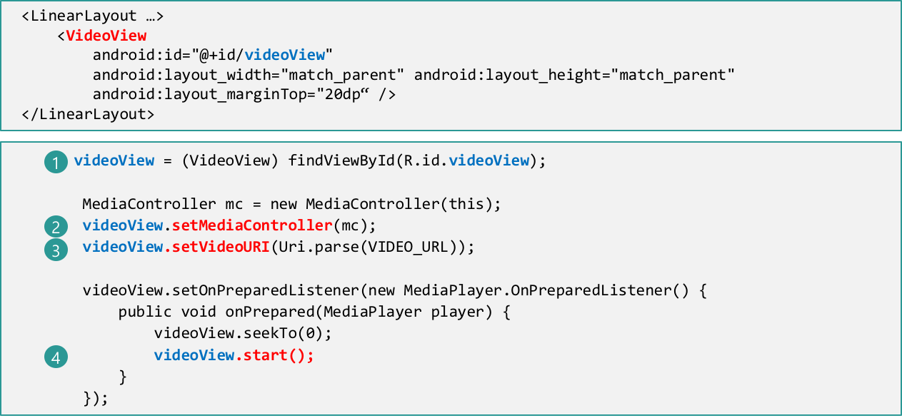
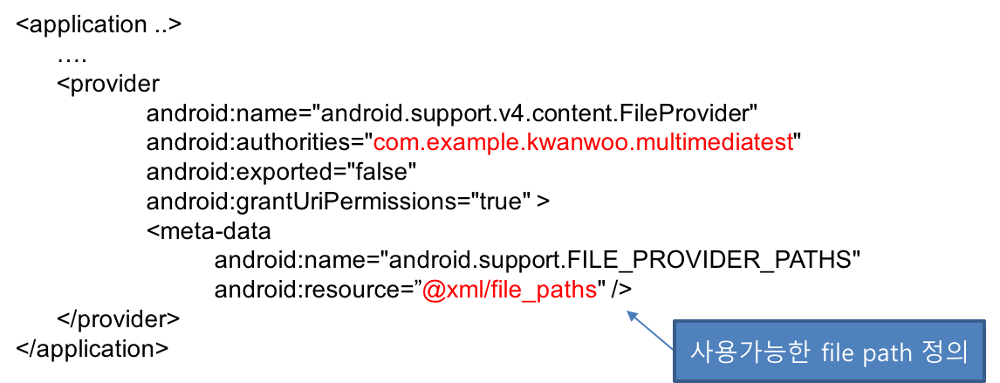

MediaPlayer로도 비디오 재생이 가능하나, VideoView 위젯을 이용하면 매우 간단히 비디오 재생이 가능
VideoView 활용 절차
- XML 레이아웃에
태그 추가 Java 코딩
- VideoView 객체 참조
[선택사항] 미디어콘트롤러 설정

재생할 동영상 URI 설정
재생 시작
데이터 소스 종류
단말 내부 파일
외부 저장소인 경우 접근 권한(android.permission.READ_EXTERNAL_STORAGE) 필요
<manifest ... >
<uses-permission android:name="android.permission.READ_EXTERNAL_STORAGE" />
</manifest>웹 상의 URLs (인터넷 접근 권한(android.permission.INTERNET) 필요)
<manifest ... >
<uses-permission android:name="android.permission.INTERNET" />
</manifest> MediaPlayer mediaPlayer = MediaPlayer.create(context, R.raw.sound_file_1);
mediaPlayer.start(); mediaPlayer.stop();
mediaPlayer.release(); String url = "http://www.hrupin.com/wp-content/uploads/mp3/testsong_20_sec.mp3";
MediaPlayer mediaPlayer = new MediaPlayer();
try {
mediaPlayer.setDataSource(url);
mediaPlayer.prepare(); // 버퍼링으로 인해 오래 걸릴 수 있음
} catch (IOException e) {}
mediaPlayer.start();[주의] Android Platform API 28 이상의 디바이스에서는 ClearText 지원이 기본적으로 비활성화되어 있다.
<application
android:usesCleartextTraffic="true"
... >URI는 정보의 고유한 명칭으로 웹 주소를 나타내는 URL보다 더 상위의 개념
File 타입: file://파일패스/파일이름
file:///storage/emulated/0/Pictures/camera_image.jpg안드로이드 리소스 타입: android.resource://패키지이름/리소스폴더/리소스이름
android.resource://com.example.kwanwoo.multimediatest/raw/instrumentalURL 타입: http://호스트주소/패스
http://www.hrupin.com/wp-content/uploads/mp3/testsong_20_sec.mp3컨텐츠 타입: content://정보제공자/패스/아이디
content://media/external/video/media/154패턴
Uri myUri = ....; // initialize Uri here
MediaPlayer mediaPlayer = new MediaPlayer();
try {
mediaPlayer.setDataSource(getApplicationContext(), myUri);
mediaPlayer.prepare();
} catch (IOException e) { }
mediaPlayer.start();Uri 클래스의 주요 메소드
static Uri parse(String uriString) - Uri문자열로부터 Uri 객체 생성
Uri image_Uri = Uri.parse("file:///storage/emulated/0/Pictures/camera_image.jpg");static Uri.fromFile(File file) - file로부터 Uri 객체 생성
Uri image_Uri = Uri.fromFile(
new File(Environment.getExternalStorageDirectory().getPath()+
"/Pictures/camera_imge.jpg")));예제
Uri myUri = Uri.parse("android.resource://com.example.kwanwoo.multimediatest/raw/instrumental");
//Uri myUri = Uri.parse("http://www.hrupin.com/wp-content/uploads/mp3/testsong_20_sec.mp3");
MediaPlayer mediaPlayer = new MediaPlayer();
try {
mediaPlayer.setDataSource(getApplicationContext(), myUri);
mediaPlayer.prepare();
} catch (IOException e) { }
mediaPlayer.start();MediaPlayer로도 비디오 재생이 가능하나, VideoView 위젯을 이용하면 매우 간단히 비디오 재생이 가능
VideoView 활용 절차
Java 코딩
[선택사항] 미디어콘트롤러 설정
재생할 동영상 URI 설정
재생 시작

필요한 권한
<manifest ... >
<uses-permission android:name="android.permission.RECORD_AUDIO" />
<uses-permission android:name="android.permission.WRITE_EXTERNAL_STORAGE" />
</manifest>오디오 녹음 절차
[주의] Android 6.0 이상부터는 앱 실행 중에 권한 검사 및 요청 필요
앱 시작시에 앱에서 필요한 권한 보유여부를 검사하고 없으면 요청한다.
다음 checkDangerousPermissions() 메소드는 앱의 매인 액티비티의 onCreate() 함수에서 호출하여, 앱 시작시에 필요한 권한(외부저장소 파일 접근 및 오디오 기록)을 얻도록 하기 위한 코드를 정의하고 있다.
protected void onCreate(Bundle savedInstanceState) {
//...
checkDangerousPermissions();
}
// onCreate() 메소드에서 앱 시작시 호출
private void checkDangerousPermissions() {
String[] permissions = {
Manifest.permission.READ_EXTERNAL_STORAGE,
* Manifest.permission.WRITE_EXTERNAL_STORAGE, // 외부 저장소에 파일을 저장할 때 필요
* Manifest.permission.RECORD_AUDIO
};
int permissionCheck = PackageManager.PERMISSION_GRANTED;
for (int i = 0; i < permissions.length; i++) {
* permissionCheck = ContextCompat.checkSelfPermission(this, permissions[i]);
if (permissionCheck == PackageManager.PERMISSION_DENIED) {
break;
}
}
if (permissionCheck != PackageManager.PERMISSION_GRANTED) {
* ActivityCompat.requestPermissions(this, permissions, 1);
}
} private void startAudioRec() {
* mMediaRecorder = new MediaRecorder();
* mMediaRecorder.setAudioSource(MediaRecorder.AudioSource.MIC);
* mMediaRecorder.setOutputFormat(MediaRecorder.OutputFormat.MPEG_4);
* mMediaRecorder.setAudioEncoder(MediaRecorder.AudioEncoder.DEFAULT);
recFileN = "VOICE" + currentDateFormat() + ".mp4";
// currentDateFormat(): 현재 시각을 “yyyyMMdd_HH_mm_ss” 형태로 반환
* mMediaRecorder.setOutputFile(Environment.getExternalStorageDirectory().getPath() +
"/Music/" + recFileN);
// 출력 파일의 위치를 외부저장소의 /Music/ 위치로 설정
try {
* mMediaRecorder.prepare();
Toast.makeText(getApplicationContext(), "녹음을 시작하세요.", Toast.LENGTH_SHORT).show();
* mMediaRecorder.start();
} catch (Exception ex) {
Log.e("SampleAudioRecorder", "Exception : ", ex);
}
} private void stopAudioRec() {
* mMediaRecorder.stop();
* mMediaRecorder.release();
mMediaRecorder = null;
Uri uri = Uri.parse("file://" + Environment.getExternalStorageDirectory().getPath() +
"/Music/"+ recFileN);
// 리스트 뷰의 항목으로 녹음된 파일 이름과 URI를 추가
mAdapter.addItem(new MediaItem(MediaItem.SDCARD, recFileN,uri));
Toast.makeText(getApplicationContext(), "녹음이 중지되었습니다.", Toast.LENGTH_SHORT).show();
}특별한 Permission이 필요 없음
카메라 앱 요청
private void dispatchTakePictureIntent() {
* Intent takePictureIntent = new Intent(MediaStore.ACTION_IMAGE_CAPTURE);
if (takePictureIntent.resolveActivity(getPackageManager()) != null) {
// resolveActivity(): takePictureIntent를 처리할 수 있는 (사진찍기) 액티비티 반환
startActivity(takePictureIntent);
}
}Uri 객체를 Extras를 통해 카메라 앱으로 전달
[주의] Android 7.0 이상부터는 FileProvider의 getUriForFile(Context, String, File)를 통해 해당 파일 객체의 content://URI를 획득
[사전조건] 외부 저장소에 저장하기 위해서 Permission 획득 과정 필요
*Intent takePictureIntent = new Intent(MediaStore.ACTION_IMAGE_CAPTURE);
If (takePictureIntent.resolveActivity(getPackageManager()) != null) {
// 1. 카메라 앱으로 찍은 이미지를 저장할 파일 객체 생성
mPhotoFileName = ＂IMG＂+currentDateFormat()+＂.jpg＂;
mPhotoFile = new File(getExternalFilesDir(Environment.DIRECTORY_PICTURES),
mPhotoFileName);
if (mPhotoFile !=null) {
// 2. 생성된 파일 객체에 대한 Uri 객체를 얻기
Uri imageUri = FileProvider.getUriForFile(this,
"com.example.kwanwoo.multimediatest", mPhotoFile);
// 3. Uri 객체를 Extras를 통해 카메라 앱으로 전달
takePictureIntent.putExtra(MediaStore.EXTRA_OUTPUT, imageUri);
* startActivityForResult(takePictureIntent, REQUEST_IMAGE_CAPTURE);
} else
Toast.makeText(getApplicationContext(), ＂file null＂, Toast.LENGTH_SHORT).show();
}FileProvider는 ContentProvider의 특별한 서브 클래스로서 특정한 앱에서 생성한 파일을 다른 앱과 공유할 수 있도록 안전한 방법(file:///Uri 대신에 content://Uri 사용)을 제공해 준다.
앱의 매니페스트 파일에 FileProvider 설정

FileProvider에서 Content Uri로 제공할 수 있는 파일의 위치를 설정
<?xml version="1.0" encoding="utf-8"?>
<paths xmlns:android="http://schemas.android.com/apk/res/android">
<external-files-path name="image_capture" path="Pictures/" />
<external-files-path name="video_capture" path="Movies/" />
</paths>앱 전용 외부 저장소 영역의 파일 위치를 설정하는 경우
<external-files-path name="name" path="path" />공용 외부 저장소 영역의 파일 위치를 설정하는 경우
<external-path name="name" path="path" />[추가 참고자료: https://developer.android.com/reference/android/support/v4/content/FileProvider.html]
protected void onActivityResult(int requestCode, int resultCode, Intent data) {
if (requestCode == REQUEST_IMAGE_CAPTURE && resultCode == RESULT_OK) {
if (mPhotoFileName != null) {
mPhotoFile = new File(getExternalFilesDir(Environment.DIRECTORY_PICTURES),
mPhotoFileName);
mAdapter.addItem(new MediaItem(
MediaItem.SDCARD, // 미디어 항목 위치 종류
mPhotoFileName, // 미디어 항목 표시 이름
Uri.fromFile(mPhotoFile), // 미디어 항목 Uri 객체
MediaItem.IMAGE)); // 미디어 항목 타입
}
}
}static final int REQUEST_VIDEO_CAPTURE = 2;
private void dispatchTakeVideoIntent() {
* Intent takeVideoIntent = new Intent(MediaStore.ACTION_VIDEO_CAPTURE);
if (takeVideoIntent.resolveActivity(getPackageManager()) != null) {
//1. 카메라 앱으로 찍은 동영상을 저장할 파일 객체 생성
mVideoFileName = "VIDEO"+currentDateFormat()+".mp4";
File destination = new File(getExternalFilesDir(Environment.DIRECTORY_MOVIES),
mVideoFileName);
if (destination != null) {
//2. 생성된 파일 객체에 대한 Uri 객체를 얻기
Uri videoUri = FileProvider.getUriForFile(this,
"com.example.kwanwoo.multimediatest", destination);
//3. Uri 객체를 Extras를 통해 카메라 앱으로 전달
takeVideoIntent.putExtra(MediaStore.EXTRA_OUTPUT, videoUri);
startActivityForResult(takeVideoIntent, REQUEST_VIDEO_CAPTURE);
}
}protected void onActivityResult(int requestCode, int resultCode, Intent data) {
...생략...
if (requestCode == REQUEST_VIDEO_CAPTURE && resultCode == RESULT_OK) {
if (mVideoFileName != null) {
File destination = new File(getExternalFilesDir(Environment.DIRECTORY_MOVIES),
mVideoFileName);
mAdapter.addItem(new MediaItem(
MediaItem.SDCARD,
mVideoFileName,
Uri.fromFile(destination),
MediaItem.VIDEO));
} else
Toast.makeText(getApplicationContext(), "!!! null video.", Toast.LENGTH_LONG).show();
}
}특별한 Permission이 필요 없음
Photo/Gallery 앱 요청
private void dispatchPickPictureIntent() {
Intent pickPictureIntent = new Intent(Intent.ACTION_PICK);
pickPictureIntent.setType("image/*");
if (pickPictureIntent.resolveActivity(getPackageManager()) != null) {
startActivityForResult(pickPictureIntent,REQUEST_IMAGE_PICK);
}
}
onActivityResult() 메소드에서 선택된 사진 결과 얻기
MediaStore.Images.Media 클래스의 getBitmap()를 통해 Uri로부터 비트맵 얻기
Bitmap getBitmap (ContentResolver cr, Uri url)Example
protected void onActivityResult(int requestCode, int resultCode, Intent data) {
if (requestCode == REQUEST_IMAGE_PICK && resultCode == RESULT_OK) {
Uri imgUri = data.getData();
try {
Bitmap imgBitmap = MediaStore.Images.Media.getBitmap(getContentResolver(), imgUri);
...
} catch (IOException e) { ... }
...
}
Bitmap 데이터를 파일로 저장하기
Bitmap 클래스의 compress 메소드를 이용하면 비트맵을 다양한 형식으로 저장할 수 있다.
compress(Bitmap.CompressFormat format, int quality, OutputStream stream) Example
protected void onActivityResult(int requestCode, int resultCode, Intent data) {
if (requestCode == REQUEST_IMAGE_PICK && resultCode == RESULT_OK) {
Uri imgUri = data.getData();
try {
Bitmap imgBitmap = MediaStore.Images.Media.getBitmap(getContentResolver(), imgUri);
mPhotoFileName = "IMG"+currentDateFormat()+".jpg";
mPhotoFile = new File(getExternalFilesDir(Environment.DIRECTORY_PICTURES), mPhotoFileName);
imgBitmap.compress(Bitmap.CompressFormat.JPEG,100,
new FileOutputStream(mPhotoFile));
...
} catch (IOException e) {...}
}